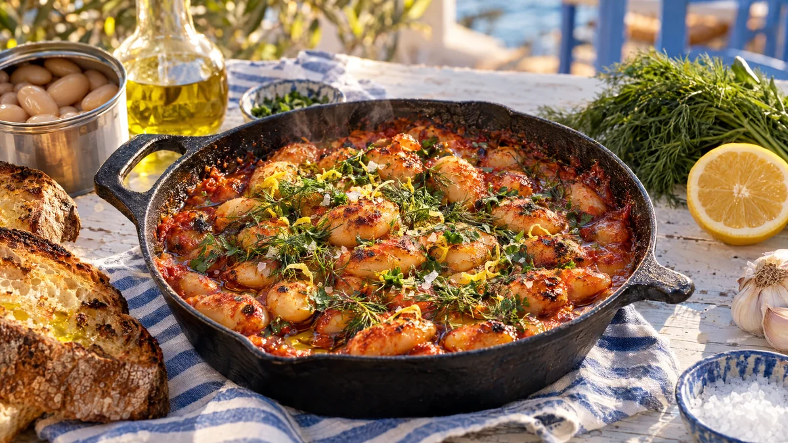

RESTFEST · RECEPTHuvudrätt · Tillbehör
Ugnsbakade stora vita bönor i tomatsås med dill och citron
Två burkar stora vita bönor, en burk krossade tomater och en lök. Bönorna bakas i ugnen i en söt, djupröd tomatsås med vitlök, oregano och mycket olivolja, tills såsen är tjock som sylt och bönorna överst har fått krispiga kanter. Toppa med dill, citronskal och ett varv olivolja. Grekisk tavernamat ur skafferiet.
- Förberedelse
- 10 min
- Tillagning
- 50 min
- Portioner
- 4
- Nivå
- Nybörjare
 Det här behöver du
Det här behöver du
JÄMFÖRT MED DIN KYL
Tryck på + vid det du behöver köpa.
Bönor
Till servering
Gör så här
- Sätt ugnen på 200 grader. Skölj bönorna i en sil och låt dem rinna av.
- Hacka löken. Skala och riv moroten fint. Skiva vitlöken.
- Hetta upp hälften av olivoljan i en ugnsfast stekpanna eller gryta på medelvärme. Fräs lök och morot i 6–8 minuter, tills löken är mjuk och söt. Tillsätt vitlök och tomatpuré och fräs 1 minut till.
- Rör ner krossade tomater, vatten, oregano, socker, salt, chili och peppar. Låt sjuda i 5 minuter.
- Vänd försiktigt ner bönorna så att de inte går sönder. Ringla resten av olivoljan över ytan.
- Baka i mitten av ugnen utan lock i 30–35 minuter, tills såsen har tjocknat och bönorna överst har fått krispiga, lätt brända kanter.
- Låt stå i 10 minuter före servering. Bönorna är godast ljumma.
Dekoration och servering
- Servera direkt i pannan, så att de krispiga bönorna överst syns.
- Strö generöst med dill, persilja och citronskal, ringla över olivolja och avsluta med flingsalt.
- Ställ fram rostat surdegsbröd att skopa upp bönorna med.
- För en vegetarisk variant, smula 100 g fetaost över bönorna efter 20 minuter i ugnen.
- Bönorna blir ännu godare dagen efter och håller i 4 dagar i kylen.
Mått och ugnstemperaturer
Måtten är svenska (dl, msk, tsk, krm). Ugnstemperaturerna gäller vanlig ugn med över- och undervärme; med varmluft, sänk med 20 grader.